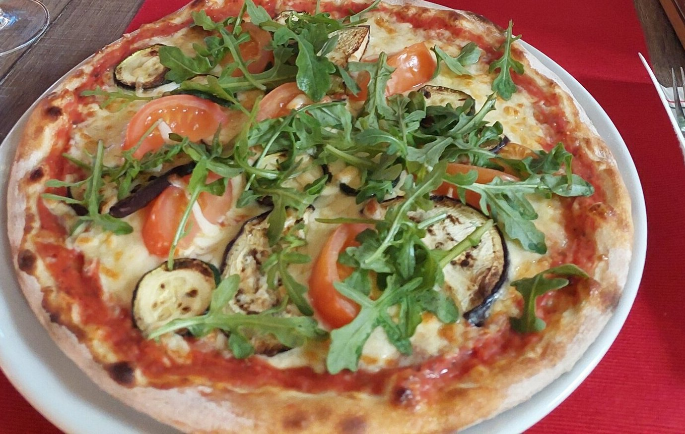
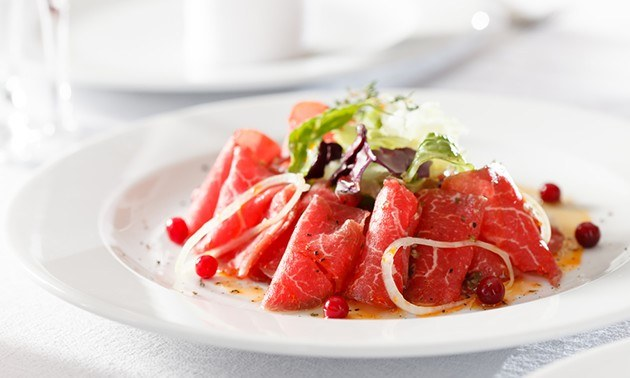
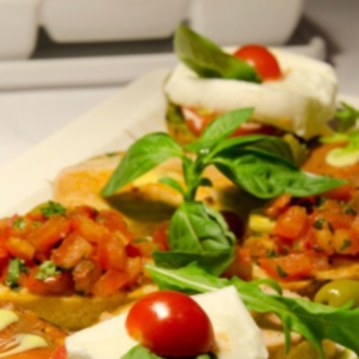
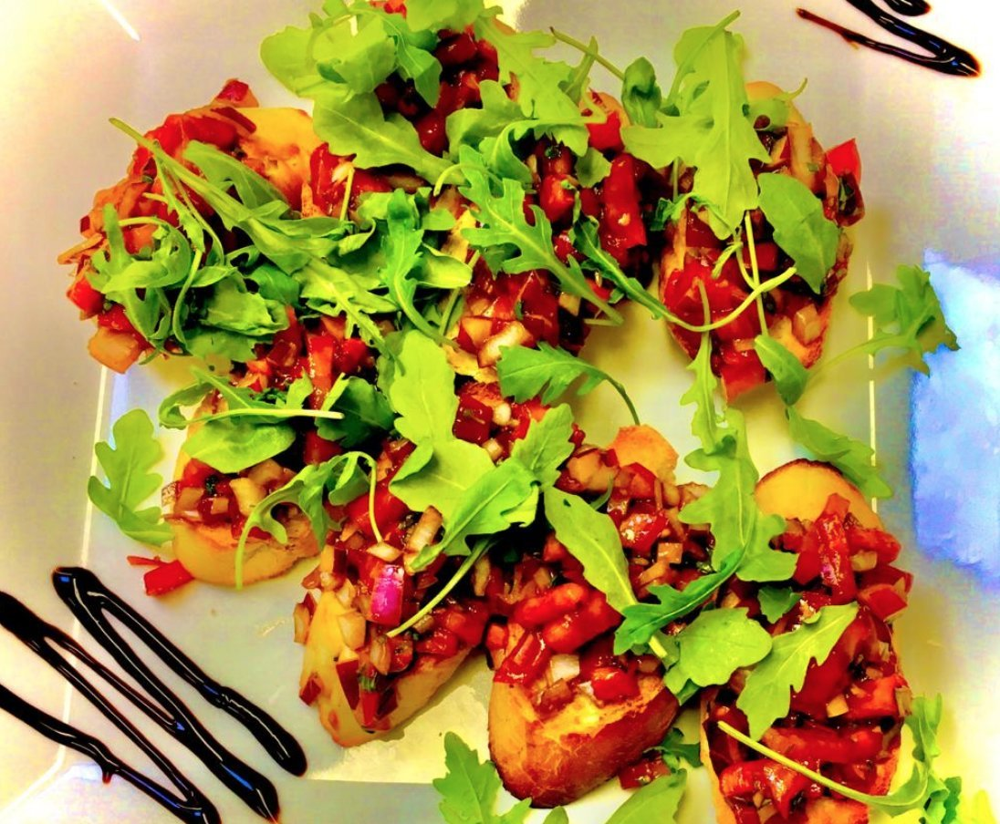

Ons menu
Antipasti, pasta, pizza, vlees en vis: een grote keuze uit de Italiaanse keuken. U kunt ook afhalen.



Antipasti freddi
Koude voorgerechten
Insalata Mista
Een gemengde saladeInsalata Pomodoro
Tomatensalade met uien, kappertjes, olijven en basilicumInsalata Caprese
Tomaten met mozzarella, pesto en basilicumProsciutto con Melone
Parmaham met meloenCocktail di Gamberetti
Garnalen met huisgemaakte cocktailsausCarpaccio
Dun gesneden ossenhaas met een dressing van basilicum en olijfolieAntipasti della Casa
Diverse Italiaanse vleeswarenAntipasti della Casa (2 personen)
Diverse Italiaanse vleeswarenSoepen & warme voorgerechten
Zuppa di Minestrone
Italiaanse groentesoepZuppa di Pomodoro
Romige tomatensoepZuppa Frutti di Mare
Huisgemaakte rijkgevulde gebonden vissoepFunghi Trifolati
Champignons gebakken in knoflookboter met verse kruiden en roomsausScampi alla Griglia
Gemarineerde grote garnalen van de grillCalamari alla Romana
Gefrituurde inktvis met truffel knoflooksausCrostini al prosciutto
Broodjes met parmaham, kaas en roomsaus uit de ovenCrostini al gorgonzola
Broodjes met pikante gorgonzola uit de ovenPane e Burro
Stokbrood met kruidenboter, of met kruidenboter en tapenadeCarni
Vleesgerechten uit ons steakhouse
Bistecca al Gorgonzola
Entrecote met romige Gorgonzolasaus en groene pepersBistecca Italiano
Entrecote met ui, knoflook, kappertjes en olijven in tomatensausFiletto d’Italy
Tournedos gevuld met gerookte zalm met een zachte zalmsausFiletto Ramazotti
Tournedos met scampi overgoten met garnalensausFiletto Bocelli
Tournedos, met ui, knoflook, kappertjes en olijven in tomatensausOssobuco
Traditioneel Italiaans hoofdgerecht met gestoofde kalfsschenkel en groentenSpareribs
Op Toscaanse wijzePetto di Pollo alla Diavola
Gegrilde kipfilet met pikante tomatensausGriglia Mista di Carne
5 Soorten gegrild vleesGriglia Mista di Carne (voor 2 personen)
5 Soorten gegrild vleesPesce
Visgerechten
Merluzzo al Forno
Kabeljauwfilet met verse groente uit de ovenCuore di Salmone con Salsa al Limoncello
Zalmfilet met citroensausPesce Spada alla Siciliana
Zwaardvis van de grill geserveerd met citroenschijfjes en roomboterPesce Spada alla Ghiotta
Zwaardvis met uien, kappertjes, olijven, basilicum, tomaatjes en witte wijnBranzino alla Siciliana
Filet van zeebaars met olijven, jalapeno, uien, aubergine, knoflook, Basilicum en tomatensausGamberoni alla Griglia
Vijf grote garnalen van de grillTrio di Pesce
Garnalen, zalmfilet en kabeljauwfilet met een heerlijke vissausMisto Mare alla Livornese
Verschillende soorten vis op Livornese wijzeMisto Mare alla Livornese (voor 2 personen)
Verschillende soorten vis op Livornese wijzePasta
Spaghetti Bolognese
Spaghetti met rundergehakt in tomatensausSpaghetti Carbonara
Spaghetti met spek, ei, grana pardana in roomsausSpaghetti Quattro Formaggi
Spaghetti met verschillende soorten Italiaanse kaasSpaghetti alla Vongole
Spaghetti met venusschelpen, knoflook en peterselie in witte wijnSpaghetti ala Pavarotti
Spaghetti met courgette, garnalen in tomatensausSpaghetti ai Frutti di Mare
Spaghetti met zeevruchten in tomatensausSpaghetti aglio olio e Peperoncino
Spaghetti met knoflook, olijfolie en pikante pepersPenne alla Pollo
Penne met champignons, kipfilet en tomatenroomsausPenne all’Arrabiata
Penne met spek, uien, knoflook, champignons, jalapeno in tomatensausTortellini Gratinati
Deegkussentjes met pesto, champignons, Ham in roomsausTagliatelle Salmone
Lintpasta bereid met verse zalm en tomatenroomsausTagliatelle Gamberoni
Lintpasta bereid met roze garnalen in roomsausSpecialità al forno
Specialiteiten uit de oven
Lasagna Bolognese
Gegratineerde pasta met rundergehakt en tomatensausLasagna La Palma
Gegratineerde pasta met rundergehakt en een pikante tomatensausPenne al Forno
Penne, gehakt, verse groenten, tomatenroomsaus en kaasTortellini al Forno
Tortellini, gehakt, verse groenten, tomatensaus en kaasPasta Mista
Een ovenschotel van Penne, Lasagna en Tortellini overgoten met een tomaten- gehaktsausCannelloni
Met rundergehakt gevulde deegrolletjes met bechamelsausCannelloni alla Frutti di Mare
Met zeevruchten gevulde deegrolletjes met Parmezaanse kaasPizza
Allemaal met tomaat en kaas
Margherita
Tomaat en kaasCipolla
Tomaat, kaas en uienProsciutto
Tomaat, kaas en hamSalami
Tomaat, kaas en salamiFunghi
Tomaat, kaas en champignonsTonno
Tomaat, kaas, tonijn en uienMozzarella
Tomaat, kaas, tomatenschijven, mozzarella, pesto en verse basilicumRucola
Tomaat, kaas, tomatenschijven, en parmazaanse kaasToscana
Tomaat, kaas, spinazie, ei knoflook en parmazaanse kaasSiciliana
Tomaat, kaas, ansjovis en olijvenEl Firno
Tomaat, kaas, champignons en salamiAmericana
Tomaat, kaas, salami, paprika en uienCapriciossa
Tomaat, kaas, ham en champignonsHawaï
Tomaat, kaas, ham en ananasSole Mio
Tomaat, kaas, ham, paprika en eiVerdi
Tomaat, kaas, aubergine, courgette, tomatenschijven, rucolaChorizo
Tomaat, kaas en chorizoTricarna
Tomaat, kaas, ham en chorizoLazio
Tomaat, kaas, tonijn, olijven, uien, paprika en jalapenoVegetaria
Tomaat, kaas en diverse groenteBolognese
Tomaat, kaas en gehakt vleesPeperoni
Tomaat, kaas, uien, ansjovis, kappertjes, olijven en jalapenoPollo
Tomaat, kaas, champignons en kipQuattro Formaggi
Tomaat en verschillende soorten Italiaanse kaasQuattro Stagioni
Tomaten, kaas, ham, salami, paprika en champignonsSanta Luca
Tomaat, kaas, gehakt, uien, paprika en champignonsDel Giro
Tomaat, kaas, parmaham, mozzarella, cherrytomaten, rucolaBella Italia
Tomaat, kaas, ham, salami, champignons, uienScampi
Tomaat, kaas, uien en garnalenFrutti di Mare
Tomaat, kaas, uien en zeevruchtenDel Pizzalolo
Tomaat, kaas, garnalen, zalmSalmone
Tomaat, kaas, mozzarella, spinazie en zalmPollo Rosso
Tomaat, kaas, rode pesto, kip en jalapenopeperCalzone
Calzone speciaal
Tomaat, kaas, gehakt vlees en knoflookCalzone Flagi
Tomaat, quattro formaggi en salamiCalzone Vegetariana
Tomaat, kaas en diverse groenteCalzone Tonno
Tomaat, kaas, uien, paprika, kappertjes en tonijnCalzone Pollo
Tomaat, kaas, champignon, kip en ananasCalzone Santa Maria
Tomaat, kaas, ham, salami, champignons, paprika, artisjokkenAfhalen? Bel of mail uw bestelling even door. Allergie of dieetwens? Vraag het gerust.
Reserveer uw tafel
Bel ons, stuur een WhatsApp of vul het formulier in. We houden graag een plekje voor u vrij.
Liever even bellen?
Reserveren en afhalen kan telefonisch. Ook voor groepen.
0499 22 40 03Mobiel: 06 28 73 49 60
Dinsdag t/m zondag 11:30 - 22:00Maandag gesloten, behalve op feestdagen